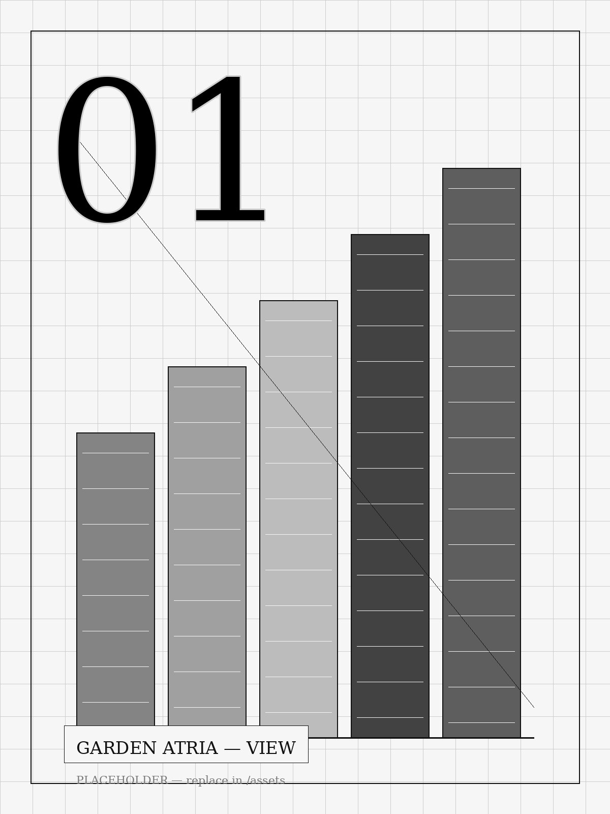
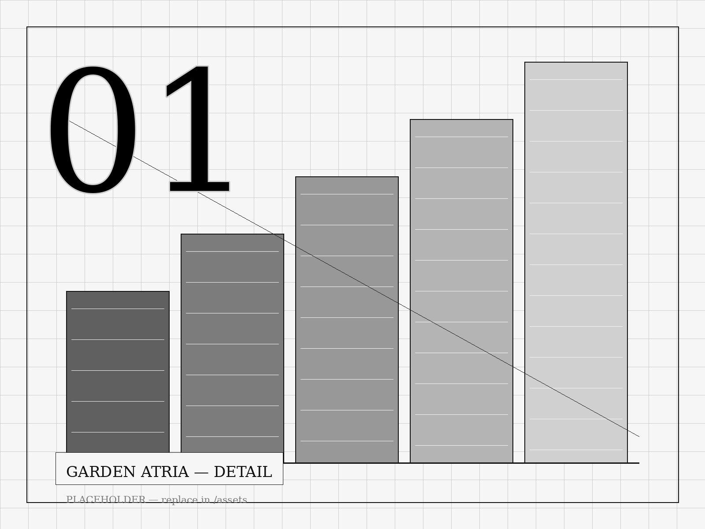

Jackson Muno is a skilled architect with a refined global perspective.
Architectural Designer specializing in hospitality, entertainment, and mixed-use developments. Focused on designing impactful destinations that enhance experiences and strengthen communities.
Projects
Drag · scroll horizontally
Garden Atria
A stacked residence organised around a planted central void — daylight, air, and greenery drawn vertically through the section.


Elevated Plaza
A raised public terrace that lifts the street into a quiet, framed horizon — a civic room above the city grid.
Hydro-Filtration Dam
Infrastructure as landscape — a filtration dam whose terraced concrete doubles as a public walk along the water.
West Loop Theater
A black-box performance house wrapped in a louvred screen — the city glimpses the stage; the stage borrows the city.
Tunnel to Poble Espanyol
A carved pedestrian passage that compresses, darkens, then releases into the open village — a study in threshold and light.
Sketches From Abroad
A travelling notebook — quick graphite studies of streets, sections, and light gathered across cities abroad.